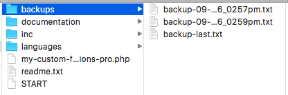

My Custom Functions PRO
Premium WordPress Plugin
- created: 09/10/2016
- latest update: 10/30/2016
- by: Arthur Gareginyan
- email: arthurgareginyan@gmail.com
Thank you for purchasing my plugin. If you have any questions that are beyond the scope of this help file, please feel free to email me. Thanks so much!
Installation
Install "My Custom Functions PRO" plugin just as you would any other WordPress plugin.
Upload via WordPress:
- Log into Dashboard of your WordPress website.
- Go to "Plugins" —> "Add New".
- Click "Upload Plugin", and browse the ZIP file with plugin.
- Activate this plugin through the "Plugins" tab.
Upload via FTP:
- Unzip the ZIP file with this plugin.
- Upload the unzipped catalog to your website's plugin directory (/wp-content/plugins/).
- Log into Dashboard of your WordPress website.
- Activate this plugin through the "Plugins" tab.
After installation, a "Custom Functions" menu item will appear in the "Settings" section. Click on this in order to view plugin settings page.
Using at first time
To use this plugin at first time just do the following:
1. Log into Dashboard of your WordPress website.
2. Go to "Settings" —> "Custom Functions". You will be taken to the plugin settings page.
3. Enter the name or small description of this function in the field "Label".
4. Place your PHP code to the field bellow.
5. Click the "Save Changes" button.
Now your PHP code added and wait when you enable it!
Add new function
To add new function just do the following:
1. Click the "Add Another Function" button. New function will appear.
2. Enter the name or small description of new function in the field "Label".
3. Place your PHP code to the field bellow.
4. Click the "Save Changes" button.
You can add unlimited number of new functions. This is very useful, because that way you can manage your functions separately. Just use a clear names for your functions and you'll always be know about what functions and is responsible for what.
Delete function
To delete a function just do the following:
1. Find the function that you want to delete.
2. Click the "Delete" button in the upper-right corner of this function.
3. You will be prompted to confirm the deletion. Click "OK". This function will disappear, but not deleted.
4. Click the "Save Changes" button.
Done.
Enable or disable function
To enable or disable a function just do the following:
1. Find the function that you want to enable or disable.
2. Switch toggle to "ON" (green color) or "OFF" (red color).
3. Click the "Save Changes" button.
Done.
Show and hide function
To show or hide a function just do the following:
1. Find the function that you want to show or hide.
2. Click the "Show" or "Hide" button in the upper-right corner of this function. This function
(not the whole function, but field with code) will expand or minimize.
Backups of functions
Each time you push the "Save Changes" button this plugin creates a new backup of your functions. This backup is a typical TXT file with all your functions, like this:
/* My Function 1
-------------------------------------- */
function aaa {
// Content of your function
}
/* My Function 2
-------------------------------------- */
function bbb {
// Content of your function
}
The file is given the name of the corresponding date of the creation and placed in the catalog "backups". Also, for usability, creates a copy of the last backup and it's named "backup-last". You can download this file (backup-last.txt) directly from the plugin settings page.
Over time, it can accumulate a lot of backup files, so you may want to remove unnecessary files. To do this just go to the catalog "backups" (/wp-content/plugins/my-custom-functions-pro/ backups/) and remove unnecessary (or all) files.

Sidebar
The sidebar consists of five sections. All of them are minimized (in the closed state). In order to expand them, just click on the arrow button in the upper-right corner of the section.
The sidebar gives you quick access to files README.pdf, INSTRUCTIONS.pdf, FAQ.pdf, and also you can download the latest backup of your functions and make a donation.

Update plugin to new release
Update via FTP:
- Log into Dashboard of your WordPress website.
- Deactivate this plugin through the "Plugins" tab.
- Backup the catalog "backups" (not necessary).
- Unzip the ZIP file with new release of this plugin.
- Upload the unzipped catalog to your website's plugin directory (/wp-content/plugins/) with replacing all files in the old catalog of this plugin.
- Activate this plugin through the "Plugins" tab.
Done.
More Help & Support
If you have a question please read the information in the FAQ.pdf. This file located in the catalog "documentation" (/wp-content/plugins/my-custom-functions-pro/documentation/).
If you still can't find an answer to your enquiry, please get in touch with me using my email:
Regards,
Arthur Gareginyan